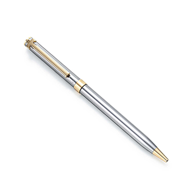

katakana
Let's start with simple katakana
Basic Katakana
Please click the characters to see how they are written and pronounced
|
ア
a 
|
カ
ka 
|
サ
sa 
|
タ
ta 
|
ナ
na 
|
ハ
ha 
|
マ
ma 
|
ヤ
ya 
|
ラ
ra 
|
ワ
wa 
|
・
・ |
|
イ
i 
|
キ
ki 
|
シ
shi 
|
チ
chi 
|
ニ
ni 
|
ヒ
hi 
|
ミ
mi 
|
・
・ |
リ
ri 
|
・
・ |
・
・ |
|
ウ
u 
|
ク
ku 
|
ス
su 
|
ツ
tsu 
|
ヌ
nu 
|
フ
fu 
|
ム
mu 
|
ユ
yu 
|
ル
ru 
|
・
・ |
・
・ |
|
エ
e 
|
ケ
ke 
|
セ
se 
|
テ
te 
|
ネ
ne 
|
ヘ
he 
|
メ
me 
|
・
・ |
レ
re 
|
・
・ |
・
・ |
|
オ
o 
|
コ
ko 
|
ソ
so 
|
ト
to 
|
ノ
no 
|
ホ
ho 
|
モ
mo 
|
ヨ
yo 
|
ロ
ro 
|
ヲ
wo 
|
ン
n 
|
Katakana is mainly used for used for foreign words such as foreign names and words that have been borrowed from other languages, such as ペン( means pen ).
Compared to Hiragana and Kanji, Katakana is the least frequently used.

Katakana with Diacritical Marks
|
ガ
ga |
ザ
za |
ダ
da |
バ
ba |
パ
pa |
|
ギ
gi |
ジ
ji |
ヂ
di |
ビ
bi |
ピ
i |
|
グ
gu |
ズ
zu |
ヅ
du |
ブ
bu |
プ
pu |
|
ゲ
ge |
ゼ
ze |
デ
de |
ベ
be |
ペ
pe |
|
ゴ
go |
ゾ
zo |
ド
do |
ボ bo |
ポ
po |
Like Hiragana, you can create additional sounds by adding diacritical marks.
Remember that with the column [h]: ハ、ヒ、フ、ヘ、ホ, while adding ["] make the sounds change to [b], we can make [p] sounds by adding a small cirlce [o].
Katakana with small や、ゆ、よ
|
キャ
kya |
シャ
sha |
チャ
cha |
ニャ
nya |
ヒャ
hya |
ミャ
mya |
リャ
rya |
ギャ
gya |
ジャ
ja |
ビャ
ya |
ピャ
pya |
|
キュ
kyu |
シュ
shu |
チュ
chu |
ニュ
nyu |
ヒュ
hyu |
ミュ
yu |
リュ
ryu |
ギュ
gyu |
ジュ
ju |
ビュ
byu |
ピュ
yu |
|
キョ
kyo |
ショ
sho |
チョ
ho |
ニョ
nyo |
ヒョ hyo |
ミョ
myo |
リョ
ryo |
ギョ
gyo |
ジョ
jo |
ビョ
byo |
ピョ
pyo |
❮ ❯